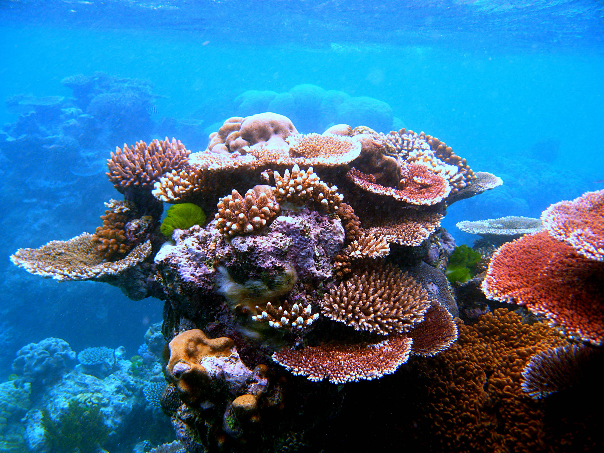

Back in the Silurian, some phytoplankton evolved into red, brown and green algae. Green algae then invaded the land and started evolving into the land plants we know today. Later, in the Cretaceous, some of these land plants returned to the sea as mangroves and seagrasses. Plant life can flourish in the brackish waters of estuaries, where mangroves or cordgrass or beach grass might grow. Flowering plants grow in sandy shallows in the form of seagrass meadows, mangroves line the coast in tropical and subtropical regions and salt-tolerant plants thrive in regularly inundated salt marshes. All of these habitats are able to sequester large quantities of carbon and support a biodiverse range of larger and smaller animal life. Marine plants can be found in intertidal zones and shallow waters, such as seagrasses like eelgrass and turtle grass, Thalassia. These plants have adapted to the high salinity of the ocean environment.
Plants
Kelp
Coral
Corals are colonial marine invertebrates within the subphylum Anthozoa of the phylum Cnidaria. They typically form compact colonies of many identical individual polyps. Coral species include the important reef builders that inhabit tropical oceans and secrete calcium carbonate to form a hard skeleton. A coral "group" is a colony of very many genetically identical polyps. Each polyp is a sac-like animal typically only a few millimeters in diameter and a few centimeters in height. A set of tentacles surround a central mouth opening. Each polyp excretes an exoskeleton near the base. Over many generations, the colony thus creates a skeleton characteristic of the species which can measure up to several meters in size.
Mermaid Fan
Udotea flabellum is a green macroalgae. It attaches to the ground and has a thallus which grows in a fan shape, hence its nickname—mermaid's fan algae. The algae attaches to sand or mud with a system of rhizoids, root-like structures that form a hold fast.[3] It lacks a stem, leaves, roots and a vascular system, but does have a stem-like feature called a stipe. The thallus is often lobed, and the lobes are thick, leathery, and moderately calcified. The stipe is also often calcified.[citation needed]